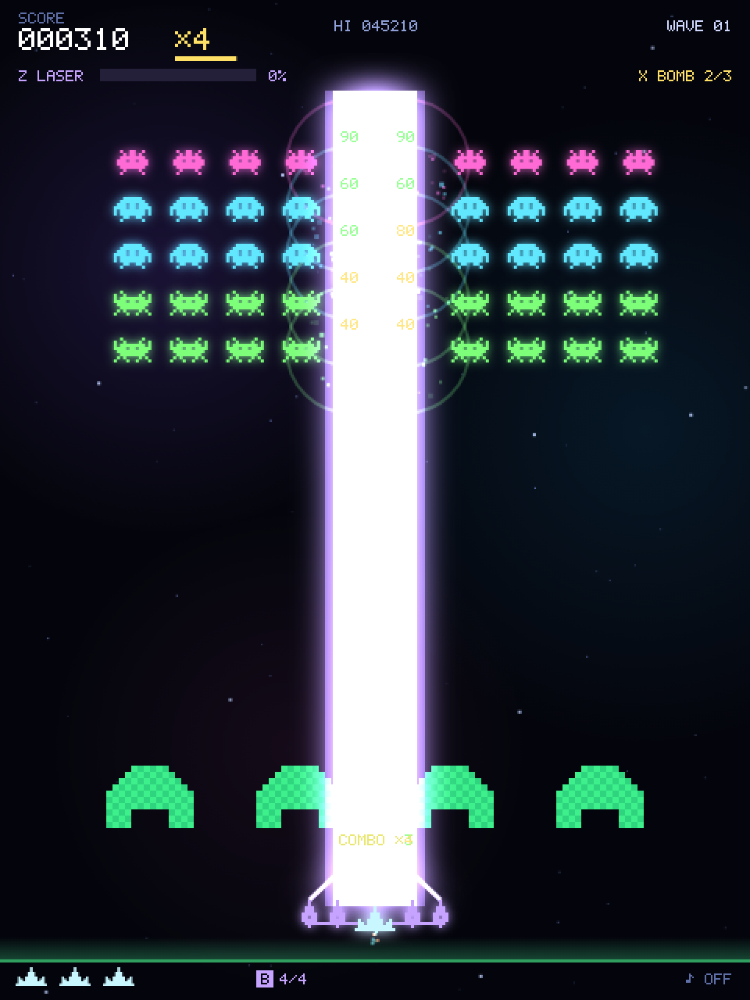
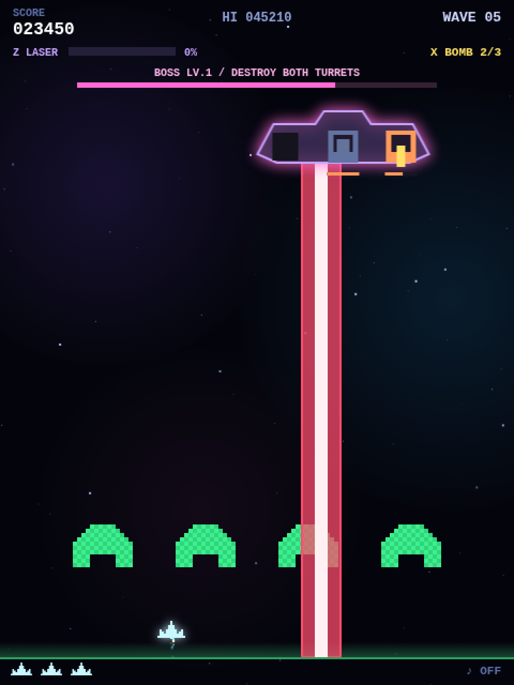
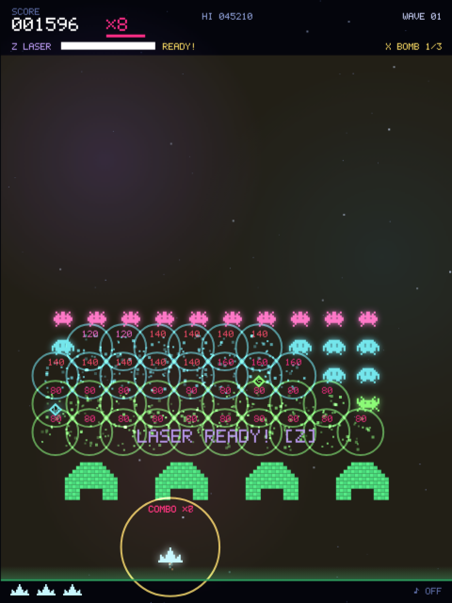

NEON ARCADE SHOOTER FOR YOUR BROWSER
ASTRO
DEFENDER
Chain your hits. Build your firepower.
Shoot down incoming formations and collect capsules to power up your ship. Link extra cannons, unleash your laser, and challenge a battleship every five waves.
Free · No installation · Mouse or keyboard controls

A closer look at the action
Select an image to view it full size
From trading fire with formations to bomb escapes and boss fights, each wave adds to the challenge.


Linked cannons and a powerful laser
Build up your linked cannons, then unleash a charged laser to sweep away enemies and bullets in its path.


A battleship every five waves
Destroy both turrets to expose the core. Move out of the red laser warning lane and find your chance to strike.


Clear the screen with a bomb
Wipe out enemy bullets and destroy nearby enemies at once. A short invulnerability window helps you recover from a tight spot.
Start by clearing your first wave
Move left and right, shoot, and dodge. Once you feel comfortable, try chaining kills and catching power-up capsules.
- 01
Open the game and start
Select “Play the game”, then click the title screen. You can also press Space or Enter to start.
- 02
Move, shoot and dodge
Move the mouse horizontally and hold the left button to shoot. Dodge enemy fire and diving aliens while thinning out the formation.
- 03
Clear the wave and keep going
Defeat every enemy to clear the wave. The next wave starts right away, and a battleship arrives every fifth wave.
The essential rules
- Start with three lives. Enemy bullets and diving aliens can cost you a life; losing them all ends the game.
- If the formation reaches the ground, the game ends even if you still have lives.
- Green barriers block enemy fire, while your own shots pass straight through. They crumble when hit and are restored each wave.
- Every fifth wave brings a battleship. Destroy both turrets before attacking the central core. Each battleship is a level higher than the last, adding twin lasers that box you in and aimed fan shots.
- Red shots aimed at your ship join in from wave 6, diving enemies shoot back from wave 11, and formations fire 3-way volleys from wave 16. The wave-clear screen announces each one before it starts.
Build a higher score
- Keep kills within 2.2 seconds of each other to maintain your combo. Higher tiers need longer chains, and ×8 takes 42 kills in a row. The chain starts over each wave.
- Clear a wave without taking damage to earn a perfect bonus.
- Earn an extra life at 10,000 points and every 20,000 points after that, up to a maximum of five lives.
- The saucer crossing the top of the screen is another source of points. Take the shot when it is safe.
Controls
Play with the mouse or keyboard. Dedicated laser and bomb buttons are also available beneath the game screen.
| Action | Mouse / on-screen controls | Keyboard |
|---|---|---|
| Start / retry | Click the title or game-over screen | Space / Enter |
| Move left / right | Move the mouse horizontally over the game | ← → / A D |
| Shoot | Hold the left mouse button | Hold Space / Enter |
| Link laser | Right-click / “LINK LASER” buttonRequires a full gauge | Z |
| Emergency bomb | “BOMB” buttonRequires a bomb in stock | X |
| Pause / resume | Click the game screen while paused to resume | P / Esc |
| Toggle sound | — | M |
| Language | “日本語” / “ENGLISH” beneath the game | — |
Special weapons are available during active combat. They do not activate during the wave-start banner or pause.
Power up and turn the battle around
Collect capsules dropped by defeated enemies to power up your ship. All four types can work together.
W · 3-way shot
Fire forward and diagonally for eight seconds, covering a wider area.
R · Rapid fire
Shoot at shorter intervals for eight seconds.
S · Shield
Absorb one hit. Your linked cannons are preserved when the shield protects you. Picking one up while shielded scores 500 points.
B · Beam link
Each pickup adds one cannon, alternating sides, up to four. Each cannon can have one beam on screen at a time. They have no time limit, but an unshielded hit costs you two of them. With all four linked, a pickup scores 500 points.
Z Link laser
Charge the gauge by defeating enemies and shooting the boss. At full charge, fire a 1.2-second laser through enemies and bullets in its path. The recoil slows your ship while it fires. More linked cannons make it wider and stronger, and firing does not consume them.
X Emergency bomb
Clear all enemy bullets and destroy enemies within 240 pixels of your ship. Bombs also interrupt the boss laser and grant 1.6 seconds of invulnerability. Start with two and carry up to three.
FAQ
Do I need to install anything or sign up?
No. Select “Play the game” to open it in your browser. The game is free and no account is required.
Why is there no sound?
Click the game screen or press Space to begin. Press M if the game is muted, and check the volume settings for your browser tab and device.
Are my high score and settings saved?
Your high score, language and sound setting are stored in the current browser. They do not sync to other devices and are removed if you clear the browser’s stored site data.
Can I play offline?
Save the game HTML file and open it in your browser. The in-game graphics and audio are generated by that file.
SOURCE CODE GUIDE
Explore how the game works
Explore the game loop, collisions, enemy movement and sound synthesis in a dedicated 23-chapter source code guide.
Ready to take on the first wave?
Play the game →